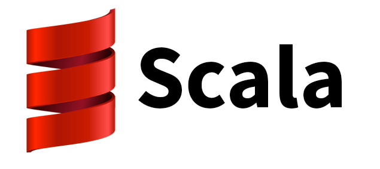
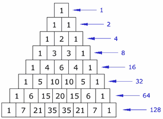
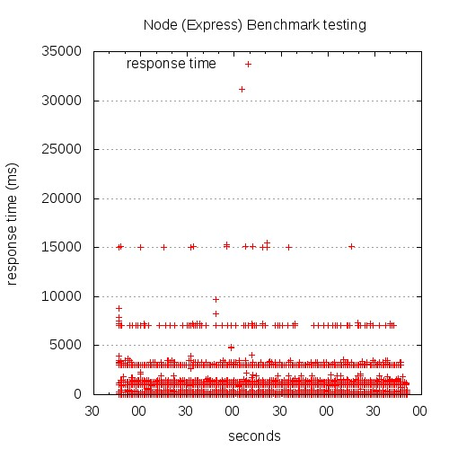
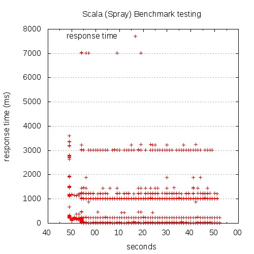
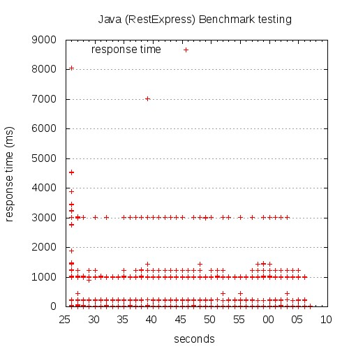
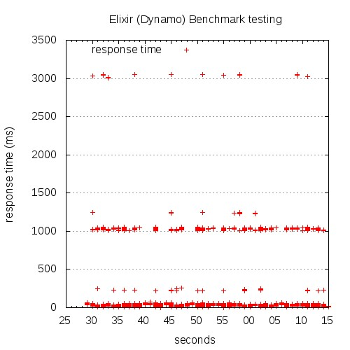

Elixir
The Best Concurrent Programming Language You Ever Tasted
A Short History of Programming Languages
Not necessarily accurate...
Don't be offended...
In the Beginning...
Woops...

Rails is Ghetto
I unfriend you
The JVM IS COOL

trait GeneralizedCategory {
type U <: Hom
type =>:[A >: U#L <: U#H, B >: U#L <: U#H] = U#C[A, B]
def id[A >: U#L <: U#H]: A =>: A
def compose[A >: U#L <: U#H, B >: U#L <: U#H, C >: U#L <: U#H](
f: B =>: C,
g: A =>: B
): A =>: C
def *[UY<:Hom](that : GeneralizedCategory {type U=UY}) = Category.ProductCategory[U,UY](this,that)
}

case class Greeting(who: String)
class GreetingActor extends Actor with ActorLogging {
def receive = {
case Greeting(who) ⇒ log.info("Hello " + who)
}
}
val system = ActorSystem("MySystem")
val greeter = system.actorOf(Props[GreetingActor], name = "greeter")
greeter ! Greeting("Charlie Parker")
Hello Mike...
-module(hello).
-export([start/0]).
start() ->
spawn(fun() -> loop() end).
loop() ->
receive
hello ->
io:format("Hello, World!~n"),
loop();
goodbye ->
ok
end.
Pid = hello:start().
Pid ! hello.

Jose Valim
Basic Types
iex> 1 # integer
iex> 0x1F # integer
iex> 1.0 # float
iex> :atom # atom / symbol
iex> {1,2,3} # tuple
iex> [1,2,3] # list
iex> <<1,2,3>> # bitstring
Default Functions
iex> size { 1, 2, 3 }
3
iex> length [ 1, 2, 3 ]
3
Matching, not assignment
iex> [head | tail] = [1,2,3]
[1,2,3]
iex> head
1
iex> tail
[2,3]
Recursion
defmodule MyList do
def len([]), do: 0
def len( [head | tail]), do: 1 + len(tail)
end
Recursion
defmodule Fac do
def fac(0), do: 0
def fac(1), do: 1
def fac(n), do: n * fac(n-1)
end
Guards
def triangle_value(_,0), do: 1
def triangle_value(r,1), do: r
def triangle_value(r,c) when r == c, do: 1
def triangle_value(r,c) when r > c do
div( fac(r), (fac(c) * fac(r-c)) )
end
Conditions
def hey(string) do
cond do
is_silent?(string) ->
"Fine. Be that way."
is_asking?(string) ->
"Sure."
is_shouting?(string) ->
"Woah, chill out!"
true ->
"Whatever."
end
end
http://blog.quarternotecoda.com/blog/2013/08/05/adventures-in-elixir/
defmodule Words do
def count(sentence) do
sentence |> normalize |> find_words |> count_words
end
defp count_words(words) do
Enum.reduce(words, HashDict.new, fn(word, dict) ->
HashDict.update(dict, word, 1, &1 + 1)
end)
end
defp find_words(sentence) do
Regex.scan(%r/\w+/, sentence)
end
defp normalize(string) do
String.downcase(string)
end
end
http://blog.quarternotecoda.com/blog/2013/08/05/adventures-in-elixir/
Pascal's Triangle
Concurrency - Parallel Map
defmodule Parallel do
def pmap(collection, fun) do
me = self
collection
|>
Enum.map(fn (elem) ->
spawn_link fn -> (send me, { self, fun.(elem) }) end
end)
|>
Enum.map(fn (pid) ->
receive do { ^pid, result } -> result end
end)
end
end
Web App Performance Graphs
Express.js
Spray
Rest Express
Dynamo
THE END
of part 1
Part 2
- Mix
- OTP
- Dynamo or Phoenix or Sugar